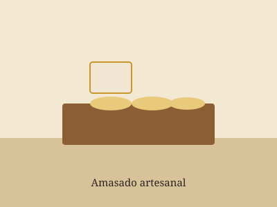
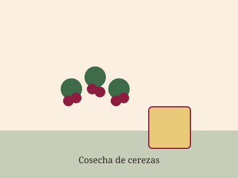
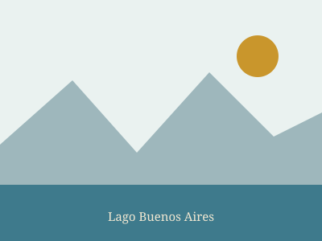
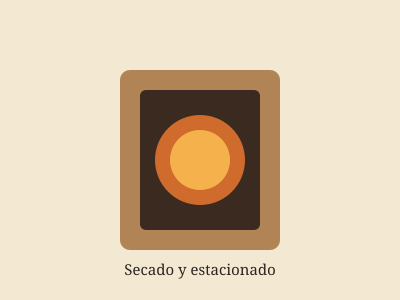
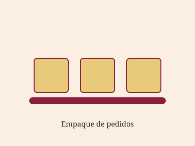
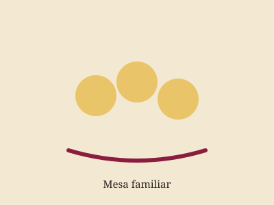

Marta Navarro
Encargada de fábrica e hija de la fundadora Elsa.
Detrás de escena
Un recorrido por nuestro obrador, la cosecha de cereza y el paisaje que nos inspira todos los días.






Quiénes amasan
Encargada de fábrica e hija de la fundadora Elsa.

Maestro pastero, a cargo del amasado y los rellenos.
Atención al público y coordinación de envíos.